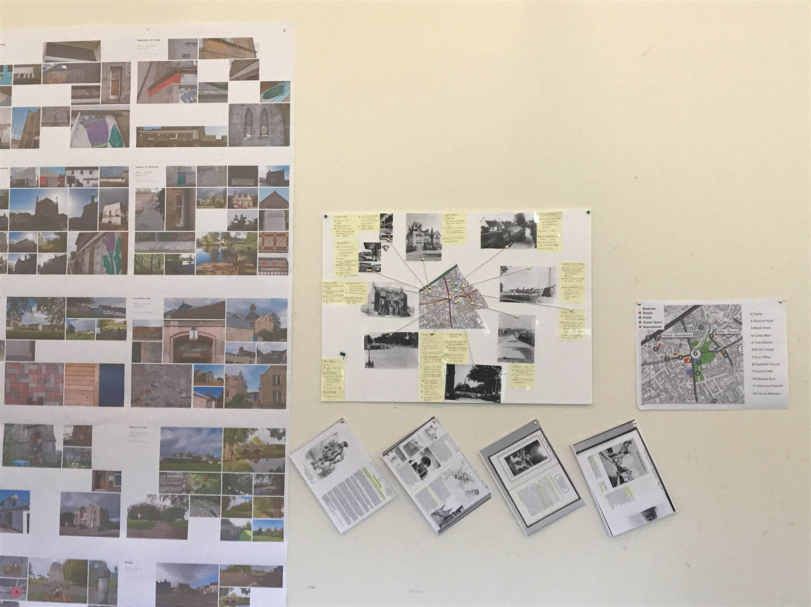
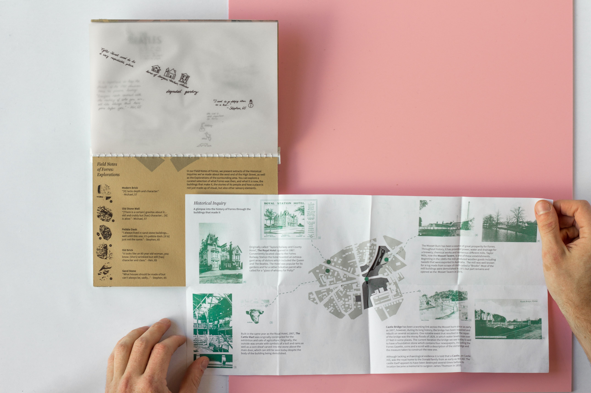

城镇手册
探索苏格兰乡村小镇的创意设计
弗里斯（Forres） 是位于苏格兰高地的一个不起眼的小镇，这本城镇手册将我们对这个小镇的调研以创意形式展现，让这里的居民更好地感受他们脚下的土地。
调研目标
比起繁华的都市，人们如何「体验」一个乡村小镇，我们又该如何向人传达这样一种体验？
桌面研究
我们调研了小镇的地图与历史，完成了一个关于小镇的资料墙，包含了历史照片，历史资料，地标等一系列有趣内容。
实地调研
如何收集居民故事...
我们采用了一系列具有创意的互动工具，与居住在此地的当地人聊聊他们的故事。我们首先呈现出一个有趣的地图，引导受访者们说出他们与小镇地标的故事。
首先向受访人展示地图层，让他们试着面对没有任何标记的地图回忆故事和想法。
接着将半透明的，标注着一些地点故事的一层覆盖在地图上，结合着地图向受访人说我们收集来的历史故事。很多趣事也是居住了很久的当地人没有听说过的。
最后将一层透明的，可以书写的纸张覆盖在前两层之上，受访者可在我们的启发下，拿起笔将自己的故事写下。
小镇的材质
人不仅通过眼睛了解事物，也通过触感。不同于都市的多元，一个乡村城镇的建筑风格与材料十分单一，因此这也让一个村镇的风格十分明显。我们用面团制作了在这里的五个最常见的建筑材料，让受访者去触摸，去感受他们所居之地的触感。
手册展示
最终，我们用最能代表城镇的两种材质分别作为封面和封底，内页则是地图和一些收集而来的故事，我们还特地保留了可以结合地图来看的带有涂鸦的透明纸，以此增加这个手册的趣味性。
我们相信，这本手册可以从多个维度向人们展现出一个乡村小镇的魅力。
